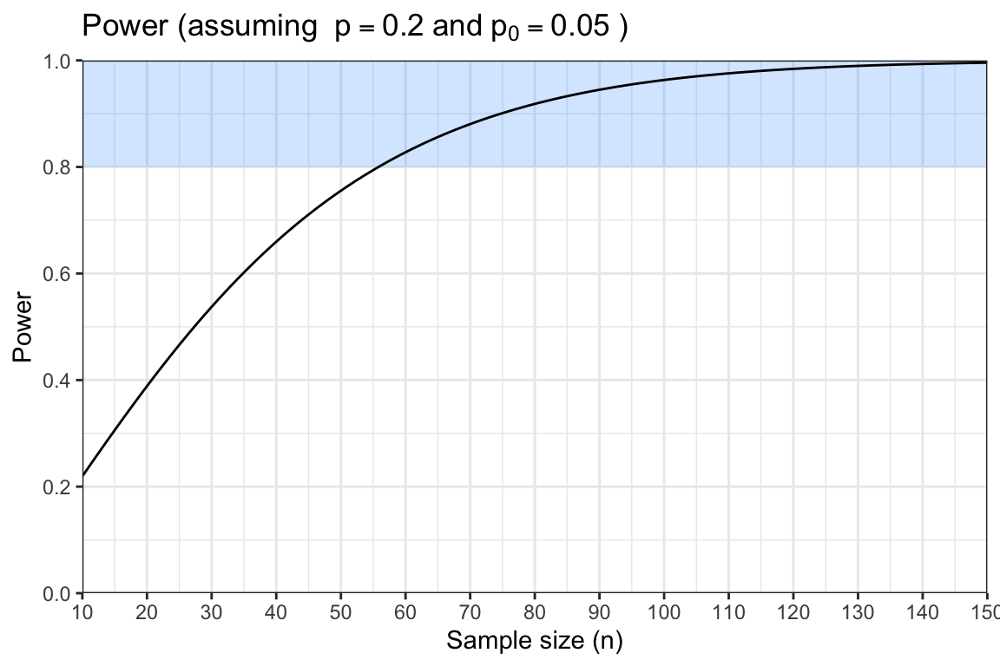
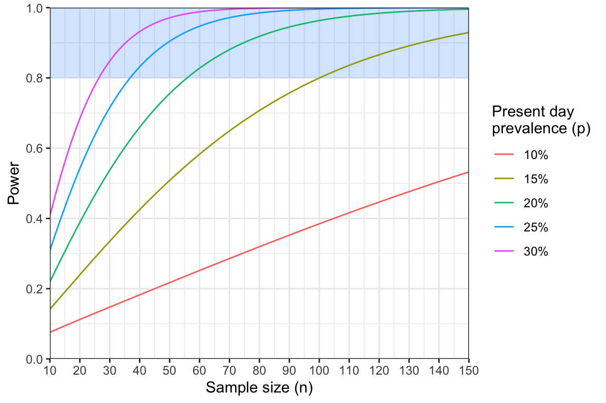

QUIZ – Sample Size and Power
Activity 4: Statistical Power
Introduction
Welcome to Activity 4: Statistical Power
In this activity, we build on what you’ve learned about hypothesis testing by introducing the concept of statistical power — the probability of detecting a real effect when it truly exists. Power analysis helps us answer a crucial question in study design: If there is a real difference, how likely is our study to find it?
Learning Outcomes
By the end of this tutorial, you will be able to:
- Perform power analysis using two different statistical tests.
- Interpret power curves.
- Use minimum sample size tables.
Disclaimer: The scenarios in this document are entirely fictitious. While real place names are used, the data itself is artificial and designed for teaching purposes only. It does not necessarily represent the real epidemiological situation in these locations.
Designing a Study to Compare Prevalence of Resistance Mutations Against a Threshold
Background
You are a molecular surveillance scientist working in Pemba, a coastal city in northern Mozambique. Following the recent findings from Mtwara, Tanzania — where the dhps A437G mutation was found in more than 5% of infections — your team wants to know whether a similar pattern might be emerging in your region.
This time, you are still in the planning stage. Before any samples are collected, you need to design a study that will give you a good chance of detecting an elevated level of resistance if it truly exists. In other words, you want to know: How many infections should we sample and sequence to have a strong chance of detecting a true prevalence above 5%?
Recapping the one-sample z-test for proportions
The first step in any power analysis is to define a clear analysis plan. We need to specify what data will be collected and how it will be analysed.
In this study, we will collect genetic data as counts: the number of samples carrying the mutation out of the total number successfully sequenced. Dividing these gives the observed prevalence of the mutation, expressed as a proportion between 0 and 1.
We will compare this observed proportion against a fixed reference value of 5%. From our earlier work on hypothesis testing, we know that the appropriate statistical test to use here is the one-sample z-test for proportions.
The test statistic is given by:
[ z = ]
where:
- () = observed sample proportion
- (p_0) = null (expected) proportion
- (n) = sample size
Defining the alternative hypothesis
So far, we’ve only looked at the null distribution — what we would expect to see if the null hypothesis were true. Now it’s time to consider the alternative hypothesis, which represents a real effect or difference.
In our case, the alternative hypothesis means that the true prevalence, which we’ll call \(p\), is not equal to the threshold value \(p_0\).
While there is only one null hypothesis, there are many possible alternatives. For example, \(p\) could be 0.1 or 0.5 — both values differ from the null threshold of \(p_0 = 0.05\), but they would lead to different test outcomes and different statistical power.
The plot below shows the distribution of the test statistic that we would expect under the alternative hypothesis. Use the sliders to explore how changing each parameter affects the distribution.
QUIZ – Exploring the Alternative Hypothesis
Let’s look at how to calculate power directly in R.
We start by calculating the mean of the distribution under the alternative hypothesis. This is given by: \[ E[Z] = \frac{|p - p_0|}{\sqrt{\frac{p(1-p)}{n}}} \] The vertical lines around \(|p - p_0|\) indicate that we should take the absolute value of the difference. This ensures that \(E[Z]\) is always positive.
Complete the following R code to calculate the value of \(E[Z]\), assuming a true prevalence of \(p = 0.20\), a threshold of \(p_0 = 0.05\), and a sample size of \(n = 100\).
# input parameters
p0 <- ?
p <- ?
n <- ?
# calculate absolute value of difference in prevalence
p_diff <- abs(p - p0)
# calculate the standard error
SE <- sqrt(p*(1 - p) / n)
# calculate the expected value of the statistic
E_Z <- ?
print(E_Z)# input parameters
p0 <- 0.05
p <- 0.20
n <- 100
# calculate absolute value of difference in prevalence
p_diff <- abs(p - p0)
# calculate the standard error
SE <- sqrt(p*(1 - p) / n)
# calculate the expected value of the statistic
E_Z <- p_diff / SE
print(E_Z)Click to see the answer
You should find that \(E[Z] = 3.75\).
This means that on average we should expect our test statistic to equal \(3.75\) if this alternative hypothesis is true.
We can plug this value of \(E[Z]\) into the following formula for power under the z-test:
\[ \text{Power} = 1 - \phi(z_{1-\alpha/2} - E[Z]) \]
\(\phi()\) in this formula refers to the area under the curve of a standard normal distribution. There is no simple way of calculating this value by hand, but we can obtain it easily in R using the pnorm() function. As in previous activities, the value \(z_{1 - \alpha/2}\) refers to the critical value of the normal distribution at a significance level \(\alpha\) (two-tailed), which is approximately equal to \(z_{1 - \alpha/2} = 1.96\).
Complete the following R code to calculate the power under the planned study design.
# calculate power
E_Z <- 3.75
z_alpha <- 1.96
power <- ? # hint, you will need to use the pnorm() function here
print(power)# calculate power
E_Z <- 3.75
z_alpha <- 1.96
power <- 1 - pnorm(z_alpha - E_Z)
print(power)Click to see the answer
You should find that \(\text{Power} = 0.963\).
QUIZ - Interpreting power
Using power curves
Our current study design has 96% power. We normally aim for at least 80% power, meaning this study is adequately powered. In fact, we could argue that it is over-powered, meaning we could use fewer samples and still have a good chance of detecting a real effect.
We can use power curves to explore how power changes as a function of sample size. In the plot below, the region with at least 80% power is shaded in blue.

QUIZ - Reading off power curves
The power analysis indicates that we may not need to sequence 100 samples after all. However, it did make the rather pessimistic assumption that prevalence is 20%. It would be useful to repeat this analysis, exploring different assumptions about the prevalence. One way to do this is via a series of power curves:

Even small changes in our assumptions about the true prevalence of dhps A437G mutations can have a large impact on statistical power. For example, if we assume the current prevalence is 15% instead of 20%, we would need roughly 100 samples to achieve 80% power.
Using a sample size formula
Power curves are valuable for visualising how power varies with sample size, but reading exact values from a power curve can be fiddly. This is where sample size formulae and pre-calculated sample size tables become useful — they allow us to identify the required sample size for a chosen level of power more quickly and precisely.
Recall that power under the one-sample z-test for proportions is given by \[ \text{Power} = 1 - \phi\left(z_{1-\alpha/2} - \frac{|p - p_0|}{\sqrt{\frac{p(1 - p)}{n}}} \right) \] In an earlier module, we rearranged the formula for the Wald confidence interval to express it in terms of the required sample size, \(n\). We’ll take the same approach here - rearranging to get \(n\) on the left. This is more fiddly than last time, and so the steps are not shown. The more mathematically inclined can click the button below to see the full derivation, otherwise feel free to skip to the answer!:
Show full derivation ▼
Step 1: Define \(\beta\) as the false-negative rate (1 minus the power):
\[ \beta = \phi\left(z_{1-\alpha/2} - \frac{|p - p_0|}{\sqrt{\frac{p(1 - p)}{n}}} \right) \] Step 2: Use the inverse normal function on both sides:
\[ z_\beta = z_{1-\alpha/2} - \frac{|p - p_0|}{\sqrt{\frac{p(1 - p)}{n}}} \] Step 3: Use the identity that \(z_\beta = -z_{1 - \beta}\):
\[ -z_{1 - \beta} = z_{1-\alpha/2} - \frac{|p - p_0|}{\sqrt{\frac{p(1 - p)}{n}}} \] Step 4: Rearrange to get z-values together:
\[ \frac{|p - p_0|}{\sqrt{\frac{p(1 - p)}{n}}} = z_{1-\alpha/2} + z_{1 - \beta} \] Step 5: Square both sides:
\[ \frac{(p - p_0)^2}{\frac{p(1 - p)}{n}} = (z_{1-\alpha/2} + z_{1 - \beta})^2 \] Step 6: Multiply both sides by \(p(1-p)/n\):
\[ (p - p_0)^2 = (z_{1-\alpha/2} + z_{1 - \beta})^2 \frac{p(1 - p)}{n} \] Step 7: Multiply both sides by \(n\) and divide by \((p - p_0)^2\):
\[ n = (z_{1-\alpha/2} + z_{1 - \beta})^2 \frac{p(1 - p)}{(p - p_0)^2} \]
The final result is: \[ n = (z_{1 - \alpha/2} + z_{1 - \beta})^2\frac{p(1 - p)}{(p - p_0)^2} \] The only unfamiliar term here is \(z_{1 - \beta}\), which is the area under the curve of the standard normal distribution up to the value \(1 - \beta\). The parameter \(\beta\) is defined as one minus our power. Typically \(\beta = 0.2\) because target power is usually set at 80%.
The following R code implements this sample size formula. Have a play around with this code and see how different parameter choices change the final sample size.
# define our assumed values
p0 <- 0.05
p <- 0.15
# define the two z parameters
z_alpha <- 1.96
z_beta <- qnorm(0.8)
# calculate the minimum sample size
(z_alpha + z_beta)^2 * p*(1 - p) / (p - p0)^2QUIZ - Using the sample size formula
Using sample size tables
Rather than using the sample size formulae, we may find it easier to produce a table of minimum sample sizes based on different assumptions. Table 1 shows the minimum sample size required to achieve 80% power under different assumptions about the prevalence:
| Assumed prevalence of dhps A437G mutation | Minimum sample size |
|---|---|
| 6% | 4427 |
| 8% | 642 |
| 10% | 283 |
| 12% | 170 |
| 14% | 117 |
| 16% | 88 |
| 18% | 69 |
| 20% | 56 |
Table 1: minimum sample sizes under various assumptions about present-day prevalence |
Notice that the minimum sample size is extremely non-linear with the assumed prevalence. Even a small change from 6% to 8% results in a huge drop in required sample size.
QUIZ - Using the sample size tables
Buffering for drop-out
Our analysis indicates a minimum sample size of 56. However, remember this is the number of successfully sequenced samples, and we should buffer this number to allow for loss of samples.
The formula for buffering was already covered in a previous module - go back over your notes if you need to refresh your memory.
QUIZ - Buffering
Conclusions
We now completed our power analysis. We have made the following assumptions:
- The prevalence of dhps A437G mutations in Pemba is 20% or higher.
- We will compare against a threshold of 5% using a one-sample z-test.
- We will recruit 105 participants, of which we expect 60% to be malaria positive.
- We expect 10% loss of samples, leading to 57 successfully sequenced samples.
Under these assumptions, we have calculated that we will have 80% power to reject the null hypothesis.
If any of these assumptions are violated then our power analysis will no longer hold. For example, if we were to switch to a different statistical test then our sample size may no longer be sufficient. If we are not confident that the prevalence in Pemba will be at least 20% then similarly we should revisit this assumption and change the design.
Remember - it is a false economy to be optimistic when conducting power analysis (for example assuming a very large effect size) because we are likely to end up with non-significant results.
In the next section we will perform a similar analysis focused on detection of rare pfk13 mutations.
Detecting rare variants
Background
Building on the success of your A437G study in Pemba, you have been invited to conduct a new study focused on identifying pfk13 mutations in the neighbouring city of Nampula. This study will target WHO validated mutations that are known to be associated with partial resistance to artemisinin. Instead of estimating the prevalence of these mutations, your goal is simply to determine whether any of these mutations are present in the population.
Your plan is to test individuals who present with malaria symptoms at a local health facility. For those who test positive for malaria, dried blood spots will be collected and subsequently sent for sequencing. However, due to limited resources, you are only able to sequence 100 samples.
Your question: with a sample size of only 100, is it worthwhile to pursue this study?
Framing the problem as a hypothesis test
This type of detection study can be framed as a null hypothesis test.
Null hypothesis: The prevalence of the mutation(s) is 0%. In other words, it is completely absent from the population.
Even a single observation of a WHO-validated mutant would disprove this null hypothesis. Therefore, unlike most statistical tests, there is no test statistic to calculate here. Instead, we simply reject the null hypothesis if we see a single sample containing a WHO-validated mutant.
It is straightforward to calculate power under this test. As before, the steps of this derivation are hidden, but click the button below if you want to see them.
Show full derivation ▼
Step 1: Chance of a single negative result:
The probability that a single sample is negative (i.e. does not carry a validated pfk13 mutation) is given by: \[ \text{Pr}(\text{Negative}) = 1 - p \]
Step 2: Chance of \(n\) negative results:
The probability that all \(n\) samples are negative is the probability of one negative sample raised to the power \(n\): \[ \text{Pr}(n \text{ negatives}) = (1 - p)^n \] This assumes that samples are drawn independently from a much larger population.
Step 3: Chance of at least one positive result:
The chance of seeing at least one positive sample is equal to one minus the probability of seeing no positive samples. If we see a positive sample then we reject the null hypothesis. Hence, this is also our power:
\[ \text{Power} = 1 - (1 - p)^n \]
The resulting formula is: \[ \text{Power} = 1 - (1 - p)^n \]
This very simple expression can be used to guide our study design.
Complete the following R code to implement this formula. What is our power if we assume a true prevalence of 5%?
# define parameters
p <-
n <-
# calculate power
power <-
print(power)# define parameters
p <- 0.05
n <- 100
# calculate power
power <- 1 - (1 - p)^n
print(power)Click to see the answer
You should find that \(\text{Power} = 0.994\) if we assume a prevalence of \(p = 0.05\).
QUIZ - Interpreting power
Based on this result, we are over-powered to detect pfk13 mutants. This gives us the freedom to reduce the sample size. So, how many samples are needed? Rearranging our power formula in terms of \(n\) we obtain: \[ n = \frac{\text{log}(1 - \text{Power})}{\text{log}(1 - p)} \]
Complete the following R code to implement this sample size formula. What minimum sample size is needed if we assume a prevalence of 5% and are aiming for 80% power?
# define prevalence
p <-
# calculate minimum sample size
n <-
print(n)# define prevalence
p <- 0.05
# calculate minimum sample size
n <- log(1 - 0.8) / log(1 - p)
print(n)Click to see the answer
You should find that \(n = 31.38\), which would be rounded up to \(n = 32\).
This is a very promising result - we can definitely run a well-powered study within our resource constraints! However, we did make the fairly pessimistic assumption that validated pfk13 mutants are at 5% prevalence in the population. In reality, we may want to catch them before they reach 5% in order to take pre-emptive measures. As before, we can consult a sample size table (Table 2):
| Assumed prevalence of pfk13 mutations | Sample size |
|---|---|
| 0.1% | 1609 |
| 0.5% | 322 |
| 1% | 161 |
| 2% | 80 |
| 3% | 53 |
| 4% | 40 |
| 5% | 32 |
Table 2: minimum sample sizes needed to achieve 80% power under various assumptions about pfk13 mutation prevalence |
Reflection:
Based on the values in Table 2, do you think it is worthwhile to conduct this study? If you ran a study that was powered down to 2% prevalence (80 samples) and did not find any pfk13 mutants, would you be reassured by this result?